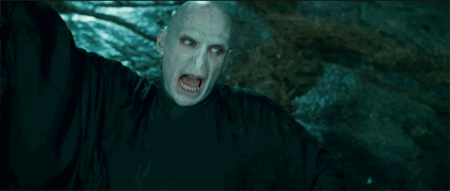
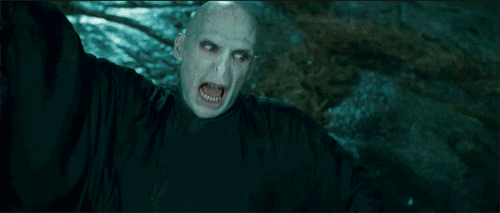

Lord Voldemort es un personaje ficticio y principal antagonista de la serie de novelas Harry Potter, de la escritora británica J. K. Rowling.
En la historia, Voldemort es el enemigo principal de Harry Potter, quien según una profecía, tiene el poder de vencerlo. La comunidad mágica teme tanto a Voldemort que prefiere referirse a él como «Quien-Tú-Sabes», «El-Que-No-Debe-Ser-Nombrado», o el «Innombrable» . Aunque en la primera guerra mágica era diferente (los mortífagos se tocaba la marca tenebrosa) en el séptimo libro se explica que este miedo se debía a que en la época de mayor auge de Voldemort, los mortífagos podían saber al instante la ubicación de quien pronunciara el nombre «Voldemort», maleficio que vuelve a producirse en la Segunda Guerra Mágica. El temor que suscita el nombre de Voldemort es tal que incluso sus propios seguidores se refieren a él como «Señor Tenebroso», «Señor de las Tinieblas» o «Señor Oscuro», o directamente hacia él como «Mi Lord», «Mi lord», «Mi Amo» o «Mi señor»

Caracterización
Apariencia
En su adolescencia se describe a Tom Riddle como un joven muy apuesto, de cabello negro, tez blanca y ojos de color castaño, alto (medía 1,80 m (5 ′ 11 ″)) y muy parecido a su padre. Después de su "resurrección", Voldemort es descrito como un ser alto (1,96 m (6 ′ 5 ″)), calvo, pálido cual muerto viviente, con ojos rojos con pupilas verticales, en lugar de una nariz tiene dos orificios nasales como rendijas parecidos a los de una serpiente, dedos de la mano anormalmente largos, con una boca sin labios y una voz fría, aguda y susurrante. El cambio (al menos en su versión cinematográfica, ya que en El primer libro de la serie Harry Potter sí aparece con nariz) se cree que se debió al dar una parte de su alma a su pitón Nagini, ya que cuando poseyó al profesor Quirinus Quirell, aún conservaba la nariz.
Meta
Voldemort, el heredero de Slytherin, desde siempre aspiraba a la inmortalidad, la dominación del mundo mágico y la limpieza de sangre (siendo él mestizo, ya que su padre era muggle), ya que él creía que solo los magos y brujas de sangre pura deberían existir en el mundo mágico y dejar fuera de él a los muggles y a los "sangre sucia" (una persona con padres muggles pero que tiene poderes mágicos). Ese es su ideal, aun llevando sangre muggle en sus venas, pero encontró un obstáculo para sus fines y ese fue Harry Potter quien, siendo apenas un bebé, logró hacer de Voldemort un ser muy débil, arrebatándole sus poderes y desvaneciendo su cuerpo, reduciendo su existencia a algo sin apenas vida que no se podía valer de sí mismo. Para adoptar forma física debía poseer los cuerpos de animales o de otras personas (como el profesor Quirinus Quirrell). Gracias a la protección de su madre logró tal hazaña un bebé de tan solo un año de edad. Pero cuando se supo la noticia, todo el mundo mágico se alegró de los hechos sucedidos. Tal fue el terror que engendró entre los habitantes del mundo mágico que éstos evitaban pronunciar su nombre (Albus Dumbledore siempre intento convencer a todos de que "el temor al nombre, solo incrementa el temor al hombre").
Habilidades mágicas
Lord Voldemort fue considerado como el segundo mago más poderoso después de Dumbledore, por lo cual tenia muchas habilidades y conocimientos.
 
